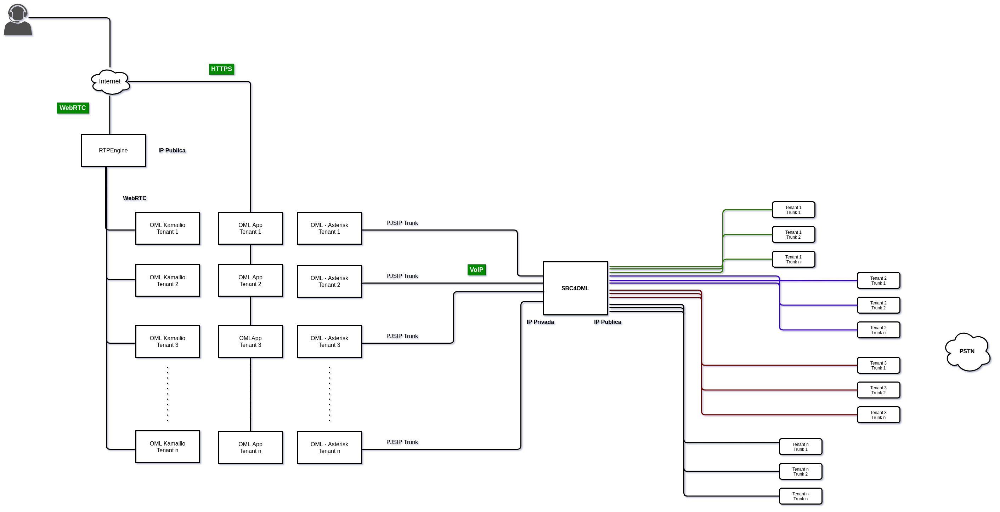
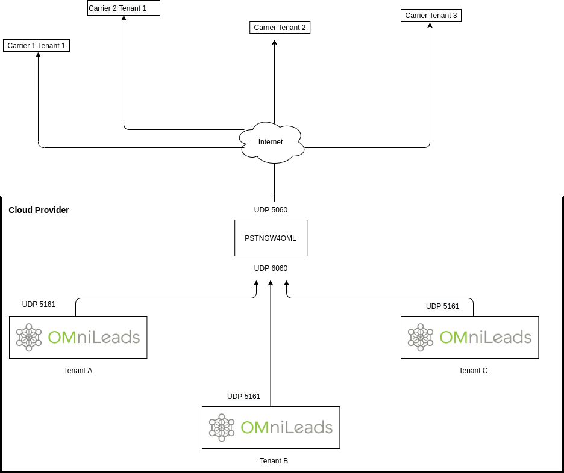

Introducción¶
PSTNGW4OML implementa un Gateway PSTN para una o más instancias de OMniLeads que necesiten concentrar la salida a la PSTN en un único punto de acceso al exterior. Sobre todo en despliegues Multi Tenant en la nube en donde resulta interesante utilizar una única dirección IP pública estática como punto de contacto con todos los carriers de troncales SIP que involucre cada uno de los tenants OMniLeads desplegados.
Deploy de Asterisk¶
Una vez descargado el repositorio se cuenta con un rol de Ansible para desplegar Asterisk sobre CentOS7 o Ubuntu-18.04. Para poder ejecutar dicho deploy necesitamos contar con ansible-1.9.2 descargado a través de python-pip.
pip install "ansible==2.9.2" --user
pip3 install -e git+https://github.com/SrMoreno/pyst2@master#egg=pyst2 --user
Asumiendo que contamos con Ansible, el siguiente paso será preparar el inventory con el listado de hosts sobre los cuales se desplegará Asterisk junto a la configuración de PSTNGW. Para ello, generar el archivo inventory sobre el directorio ./pstngw4oml/deploy/asterisk-ansible-role
X.X.X.X ansible_connection=ssh ansible_user=root
Y.Y.Y.Y ansible_connection=ssh ansible_user=root
Z.Z.Z.Z ansible_connection=ssh ansible_user=root
Todos los hosts que necesitemos.
Una vez generado el inventory procedemos con la transferencia de la clave pública del deployer sobre el/los host/s.
ssh-copy-id root@X.X.X.X
Y finalmente se ejecuta la playbook ansible que implementa nuestro pstngw4oml
ansible-playbook asterisk.yml -i inventory
NAT, puertos y direcciones IP¶
Seguridad¶
En este punto tenemos dos opciones, por un lado deshabilitar firewalld y trabajar directamente con el firewall que proporciona el proveedor de infra cloud y por el otro trabajar con iptables - firewalld.
En cualquiera de los dos casos, la idea es bloquear todo el trafico proveniente de internet a excepción de las IPs públicas de los proveedores de SIP trunks, que querramos habilitar para nuestros tenants. En ese sentido debemos habilitar el tráfico proveniente de dichos órigenes con destino en los puertos UDP: 5060 y 20000 al 50000.
Configuración de IP publica SIP¶
Si nuestro Asterisk se encuentra detrás de NAT, entonces se debe editar el archivo sbc_pjsip_transports.con para descomentar e insertar la dirección IP pública con la que salen nateados los paquetes SIP y SDP.
external_media_address=
external_signaling_address=
Deploy de tenants & trunks¶
El proyecto consta de dos archivos ejecutables que nos van a permitir generar nuevos tenants OMniLeads y sus respectivos troncales SIP vinculados a los proveedores PSTN que disponga cada uno de los tenants, así como también las rutas salientes que permitan procesar cada tipo de llamada por los diferentes troncales del tenant.
Deploy de un tenant y sus troncales
Para levantar dicha configuración debemos utilizar el script deploy_tenant.sh.
cd /opt
./deploy_tenant.sh --help
AstSBC tenant/trunk deploy script
How to use it:
--customer=$CUSTOMER the name of the tenant to deploy
--trunk=$TRUNK the name of the trunk to add
--trunk_ip=$TRUNK_IP the IP/fqdn of the the trunk to add
--trunk_port=$TRUNK_PORT the SIP port of the trunk to add. If not passed default port added is 5060
--trunk_user=$TRUNK_USER the SIP user of the trunk to add.
--trunk_password$TRUNK_PASSWORD the SIP password of the trunk to add.
Con la opción –help podemos desplegar las opciones. De igual manera vamos a explicar qué implica cada una para luego ejemplificar.
customer: nombre del tenant sobre el cual estamos trabajando
trunk: nombre del trunk-SIP del lado PSTN. Este valor será el utilizado a nivel enpoint PJSIP
trunk_ip: la IP o fqdn del proveedor SIP PSTN
trunk_port: el puerto al cual apuntar (por más que sea 5060 hay que explicitarlo)
trunk_user: el username que proporciona el carrier SIP para registrarnos en su red y autenticar las llamadas
trunk_password: el password correspondiente al username
Para el caso de dar de alta un proveedor SIP sobre un Tenant debemos lanzar:
./deploy_tenant.sh --custome=oml-clienteA --trunk=idt --trunk_ip=201.33.21.10 --trunk_port=5060 --trunk_user=mi_username --trunk_password=23lk23lk4j23k4j23j423
Esto va a generar las siguientes acciones a bajo nivel:
Inserta la configuración del trunk SIP carrier en el archivo: sbc_pjsip_endpoints_outside.conf
;For oml-tenant1-idt oml-tenant1 Trunk ID=1
[oml-tenant1-idt](outside_endpoints)
accepts_registrations=no
accepts_auth=no
sends_auth=yes
sends_registrations=yes
endpoint/set_var=TENANT=oml-tenant1
remote_hosts=201.235.179.118:6066
endpoint/permit=201.235.179.118/32
endpoint/identify_by=ip
outbound_auth/username=50505050
outbound_auth/password=omnileads
Inserta la configuración del trunk SIP del tenant omnileads en el archivo: sbc_pjsip_endpoints_oml.conf
[oml-tenant1](omnileads_endpoints)
inbound_auth/username=oml-tenant1
inbound_auth/password=C11H15NO2-C12h17N204P
endpoint/context=from-oml-tenant1
endpoint/identify_by=auth_username
endpoint/set_var=TENANT=oml-tenant1
Inserta la configuración del trunk SIP carrier a nivel AstDB
/SBC/TENANT/oml-tenant1/TRUNK/1/NAME : oml-tenant1-idt
/SBC/TENANT/oml-tenant1/TRUNKS : 1
Nota
Por cada carrier que querramos asignar a un mismo tenant, se debe ejecutar el comando expuesto modificando todos los parámetros a excepción de –customer.
Deploy de rutas salientes y sus troncales para cada Tenant
Una vez configurado todo a nivel Tenant y sus proveedores SIP PSTN nos toca trabajar a nivel de rutas salientes para encaminar las diferentes tipos de llamadas provenientes del tenant sobre los diferentes troncales SIP asignados a dicho tenant. Para ello contamos con un segundo script: outr_configuration.py.
cd /opt python3 outr_configuration.py --help usage: outr_configuration.py [-h] [--customer CUSTOMER] [--pattern PATTERN] [--name NAME] [--dial_options DIAL_OPTIONS] [--dial_timeout DIAL_TIMEOUT] [--prefix PREFIX] [--prepend PREPEND] [--trunk TRUNK] SBC Outr configuration script optional arguments: -h, --help show this help message and exit --customer CUSTOMER The tenant that will own the outr --pattern PATTERN The pattern for this outr --name NAME The name that will have this outr --dial_options DIAL_OPTIONS The dial options for this route, this option is not mandatory --dial_timeout DIAL_TIMEOUT The dial timeout for this route, this option is not mandatory --prefix PREFIX Prefix for this route, this option is not mandatory --prepend PREPEND Prepend for this route, this option is not mandatory --trunk TRUNK Specifies the trunk or trunks for this route. You can insert more than one trunk, the order you insert the trunks will be the order of failover
Como se puede apreciar el help de nuestro script enuncia cada una de las opciones o parámetros necesarios y opcionales que admite el script generador de enrutamiento saliente.
Vamos a ejemplificar el uso de este script con los siguientes escenarios:
Ejemplo 1: se necesita hacer match con numeraciones salientes dentro de éstos patrones: _XXXXXXX y _15X., para enviar las llamadas por los troncales: trunk1 y trunk2 (en modo failover) del tenant cliente1
Para este ejemplo se deberá lanzar dos veces el script:
python3 outr_configuration.py --customer=cliente1 --pattern=_XXXXXXX --name=numeros_fijos --dial_timeout=35 --trunk=cliente1-trunk1 --trunk=cliente1-trunk2
python3 outr_configuration.py --customer=cliente1 --pattern=_15X. --name=numeros_fijos --dial_timeout=35 --trunk=cliente1-trunk1 --trunk=cliente1-trunk2
Importante
Observar como el parámetro trunk implica anteponer el nombre del tenant al nombre del trunk. Si observamos el archivo sbc_pjsip_endpoints_outside se puede notar que el nombre generado para el trunk involucra el nombre del tenant por defecto.
Una vez ejecutado el comando para generar ambas rutas, podemos observar que el archivo sbc_extensions_to_outside.conf a sido afectado.
[from-cliente1]
;ruta _XXXXXXX para oml-tenant1 con ID=1
exten => _XXXXXXX,1,Verbose(Ruta 1 para tenant ${CONTEXT})
same => n,Gosub(sbc-to-outside,s,1(${TENANT},1,${EXTEN}))
same => n,Hangup()
;ruta _15X. para oml-tenant1 con ID=2
exten => _15X.,1,Verbose(Ruta 2 para tenant ${CONTEXT})
same => n,Gosub(sbc-to-outside,s,1(${TENANT},2,${EXTEN}))
same => n,Hangup()
Importante
Si necesitamos modificar el dialplan a mano, es importante no borrar el comentario generado arriba de cada bloque correspondiente a cada ruta.
También se generan las entradas en AstDB correspondientes.
*CLI> database show SBC
/SBC/TENANT/oml-tenant1/OUTR/1/DIALTIME : 35
/SBC/TENANT/oml-tenant1/OUTR/1/NAME : numeros_fijos
/SBC/TENANT/oml-tenant1/OUTR/1/TRUNK/1 : 1
/SBC/TENANT/oml-tenant1/OUTR/1/TRUNKS : 1
/SBC/TENANT/oml-tenant1/OUTR/2/DIALTIME : 35
/SBC/TENANT/oml-tenant1/OUTR/2/NAME : numeros_fijos
/SBC/TENANT/oml-tenant1/OUTR/2/TRUNK/1 : 1
/SBC/TENANT/oml-tenant1/OUTR/2/TRUNKS : 1
/SBC/TENANT/oml-tenant1/TRUNK/1/NAME : oml-tenant1-idt
/SBC/TENANT/oml-tenant1/TRUNKS : 1
Finalmente se terminan de unir las piezas en la siguiente figura:
Dar de baja tenants y/o trunks¶
A continuación se listan algunas acciones típicas de la administración:
Eliminar un tenant
Si la idea es dar de baja un tenant los pasos a ejecutar son:
1 - Eliminar el/los bloque/s de configuración correspondiente al/los carrier SIP del tenant en el archivo sbc_pjsip_endpoints_outside
2 - Eliminar las entradas de AstDB para dicho tenant:
CLI>database deltree SBC/TENANT/nombreTenant
Modificar un trunk SIP de carrier de un tenant
Si necesitamos modificar algún trunk ya sea del lado tenant o carrier, tenemos que trabajar con los archivos a bajo nivel, sbc_pjsip_endpoints_oml.conf y sbc_pjsip_endpoints_outside.conf respectivamente. Los mismos se encuentran fisicamente en el path: /opt/asterisk/etc/asterisk.